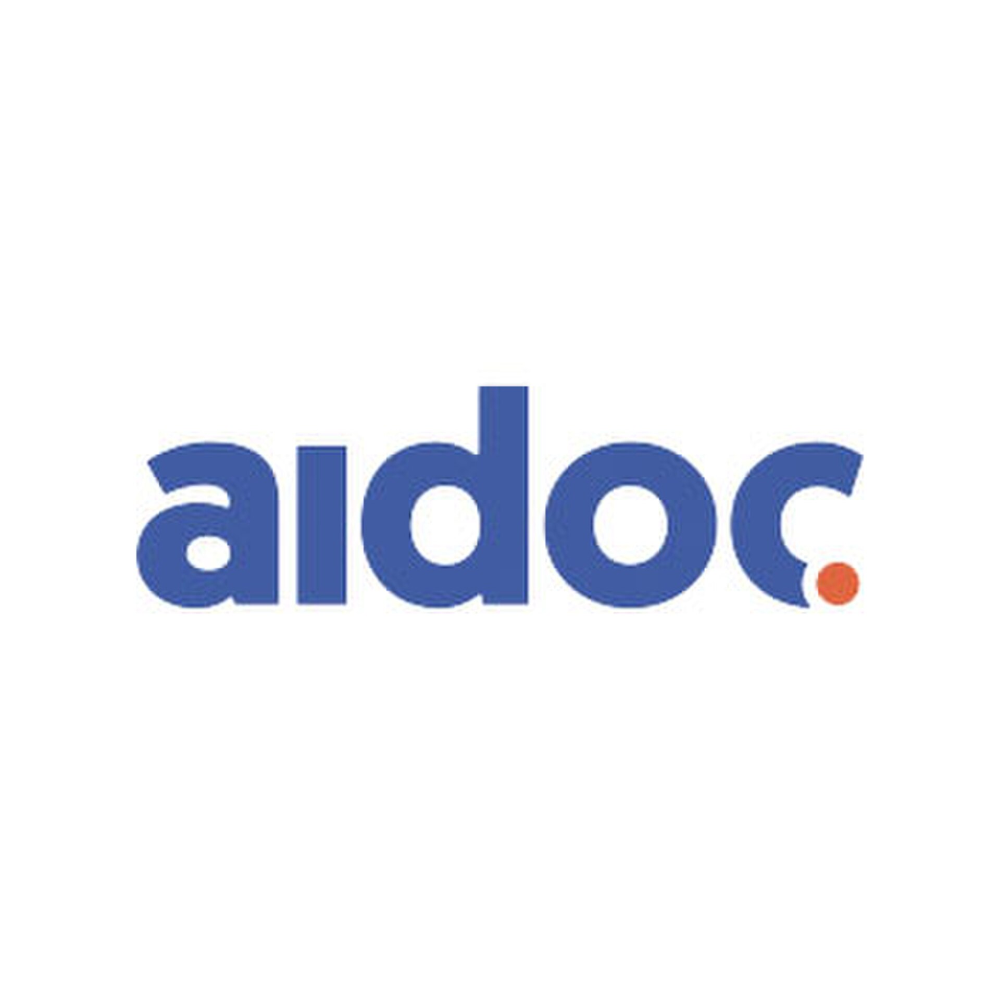

מידע מרכזי
שנת הקמה: 2016
מדינה: ישראל
מייסדים: אלעד וולך, מיכאל ברגינסקי, גיא ריינר
פריצת דרך: מערכות AI המסייעות בזיהוי ממצאים רפואיים ובהתרעות לצוותים קליניים.
מוצרים: AI Radiology, Clinical AI Platform
כיווני הרחבה עתידיים
בהמשך יתווספו שימושים קליניים, סוגי בדיקות, והסבר על AI בדימות רפואי.